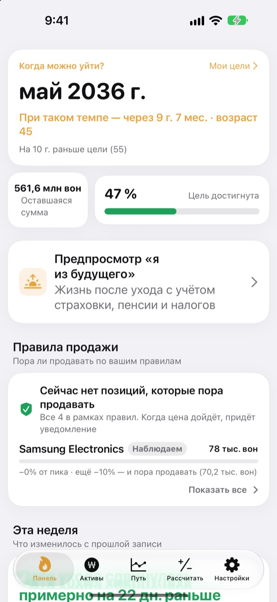
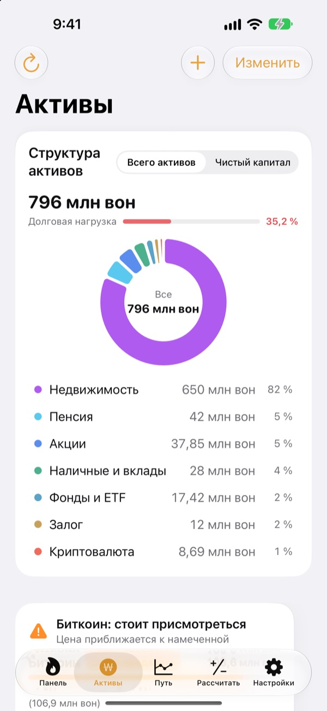
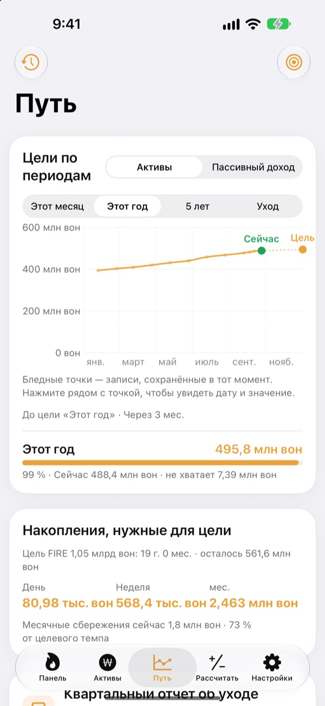
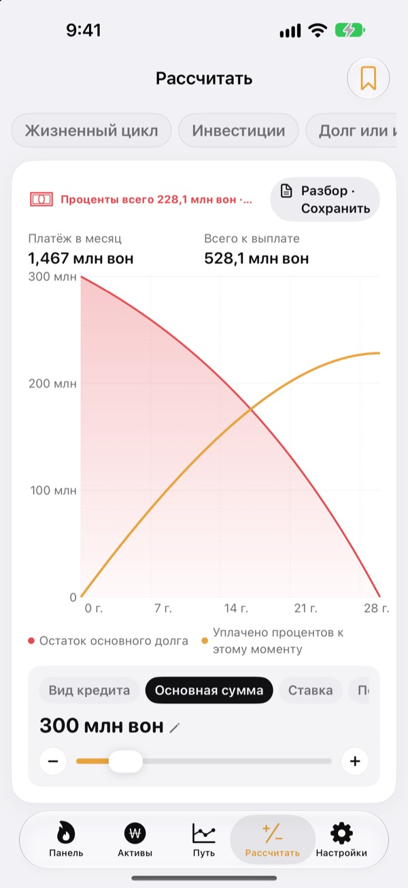

Когда можно уйти с работы?
По цифрам, а не на глаз.
Укажите, сколько тратите и сколько уже накопили, и увидите месяц, когда можно уходить. Каждый раз, когда меняются активы, видно, приблизилась эта дата или отдалилась.
Аккаунт не нужен. Записи хранятся на вашем устройстве.

Узнайте свою дату ухода
Двигайте ползунки. Это тот же расчёт, что приложение делает на первом экране.
До сих пор прикидываете в уме, можно ли уже уходить?
Когда банк, брокерский счёт, пенсионные накопления и залог за квартиру лежат в разных местах, размывается даже общая сумма, и дата ухода остаётся догадкой. Toesagak собирает всё на одном экране и по этой сумме постоянно пересчитывает месяц, когда можно уйти.
Все активы на одном экране
Недвижимость, акции, фонды и ETF, пенсии, наличные и вклады, залоги, криптовалюта и кредиты сгруппированы по видам, вместе с общими активами, чистым капиталом и долговой нагрузкой.
Цены акций и криптовалют подгружаются, чтобы стоимость была актуальной, а скриншот брокерского приложения переносит позиции и их стоимость за один раз.

Сколько в день до цели
Цели на этот месяц, год, пять лет и до пенсии вместе с прошлыми записями на одном графике. Приложение подскажет, сколько откладывать в день, неделю или месяц, чтобы не сбиться с курса.
Когда активы меняются, запись за неделю сохраняется сама, и история складывается без усилий.

Посчитайте, прежде чем решать
Калькуляторы капитала на всю жизнь, инвестиций, выбора между погашением долга и инвестированием, кредитов, вкладов и накоплений, покупательной способности зарплаты и перевода денег в часы. Сдвиньте значение, и график перерисуется, а прежняя кривая останется пунктиром для сравнения.
Часто используемые расчёты можно назвать и сохранить.

Три шага для начала
- 1
Укажите расходы и возраст
Хватит примерных цифр. Дата ухода появится сразу.
- 2
Добавьте активы
Чем подробнее, тем точнее дата.
- 3
Заглядывайте время от времени
Записи за неделю копятся сами, а 1-го числа каждого месяца приложение может напомнить.
Как приложение считает
- Цель
- Годовые расходы после ухода ÷ безопасная ставка изъятия (при 4% это расходы на 25 лет)
- Дата ухода
- Месяц, когда чистый капитал вместе с ежемесячными накоплениями, растущий с ожидаемой доходностью, достигает цели
- Общие активы
- Всё, что у вас есть, вместе
- Чистый капитал
- Общие активы минус долги, например кредиты
- Прогресс
- Чистый капитал ÷ цель. Можно следить и по пассивному доходу
- Что можно изменить
- Расходы в месяц, ставку изъятия от 2 до 6%, ожидаемую доходность от 0 до 12%, возраст, в котором хотите уйти
Все результаты являются справочными расчётами на основе введённых данных и не являются инвестиционной рекомендацией.
Вопросы
Где хранятся мои записи?
Только на вашем устройстве. Регистрации нет, разработчику ничего не отправляется. Включите синхронизацию iCloud в настройках, чтобы видеть те же записи на iPhone и iPad через свой аккаунт iCloud.
Цены не обновляются.
Американские и корейские акции, криптовалюты и курсы валют работают без настройки. Проверьте подключение к интернету и правильность тикера или кода. Цены квартир берутся из открытых данных о недвижимости Кореи, для них нужно ввести сервисный ключ в настройках.
Чем общие активы отличаются от чистого капитала?
Общие активы складываются из всего, что у вас есть. Чистый капитал равен им за вычетом долгов, например кредитов. Дата ухода считается по чистому капиталу.
Как перенести записи на новое устройство?
В настройках выберите экспорт, чтобы создать файл резервной копии, сохраните его в «Файлах», iCloud Drive или почте и восстановите на новом устройстве. Ключи API в резервные копии не попадают. Кроме того, приложение само хранит на устройстве 20 последних копий.
Как работают сигналы на продажу?
Для каждой позиции задайте, на сколько она может упасть от пика, или целевую цену. Когда цена пересечёт эту границу, придёт уведомление. На росте приложение молчит. Цены проверяются при открытии приложения и тогда, когда iOS разрешает работу в фоне (обычно раз в несколько часов), поэтому это не мониторинг в реальном времени.
Можно скрыть мои цифры от чужих глаз?
Включите блокировку приложения в настройках, и оно будет открываться по Face ID или код-паролю. При включённой блокировке ежемесячное напоминание тоже не показывает цифр.
Можно сначала осмотреться?
Включите демо-данные в настройках и изучите все экраны на активах вымышленного человека. Выключите их, и ваши записи сразу вернутся. Пока включена синхронизация iCloud, демо-данные недоступны.
Как удалить все данные?
При удалении приложения стираются все записи на устройстве. Если хотите сохранить копию, сначала экспортируйте резервный файл в настройках.
Можно ли инвестировать, опираясь на эти цифры?
Результаты Toesagak являются справочными расчётами на основе ваших данных и предполагаемой доходности. Это не инвестиционная рекомендация, а реальный итог зависит от рынка и ваших обстоятельств.
Нашли ошибку, есть идея или вопрос? Пишите на leeo@kakao.com.